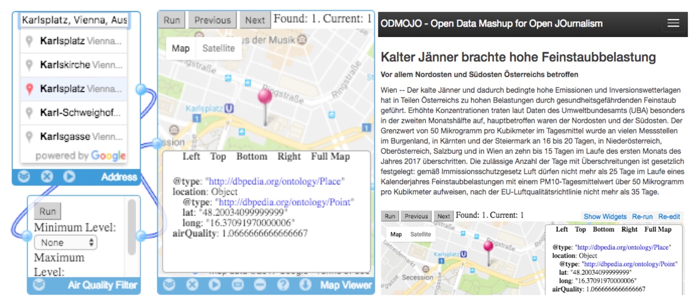

Fajar J. Ekaputra
fajar.ekaputra@tuwien.ac.at
Institute of Software Technology and Information Systems, TU Wien, Austria
Niina Maarit Novak
niina.novak@tuwien.ac.at
Institute of Software Technology and Information Systems, TU Wien, Austria
Elmar Kiesling
elmar.kiesling@tuwien.ac.at
Institute of Software Technology and Information Systems, TU Wien, Austria
Peb R. Aryan
peb.aryan@tuwien.ac.at
Institute of Software Technology and Information Systems, TU Wien, Austria
Ba-Lam Do
ba.do@tuwien.ac.at
Institute of Software Technology and Information Systems, TU Wien, Austria
Tuan-Dat Trinh
tuan.trinh@tuwien.ac.at
Institute of Software Technology and Information Systems, TU Wien, Austria
A Min Tjoa
a.tjoa@tuwien.ac.at
Institute of Software Technology and Information Systems, TU Wien, Austria
Keywords
Data Journalism
Linked Data Mashup
Open Data
Abstract
In line with a broad social and political movement in recent years, public and private sector actors have started to open up their data and to publish it on various portals. However, the actual use of the available open data sets is still rather limited in many sectors. Consequently, the potentials of available open data sets are not fully realized, which may discourage open data publishers. To encourage a broader adoption of open data and to contribute towards making democratic processes more transparent, critical data journalism is essential. In this demo paper, we propose an approach called Open Data Mashups for Data Journalism (ODMOJO) that aims to bridge open data publishers and their consumers, i.e., journalists and society at large, with Linked Data technologies. Specifically, our approach will facilitate the access, reuse, and integration of open data for General Data Journalism. We plan to evaluate our approach with potential journalism partners as well as open data publishers in Austria, to foster further adoption and utilization of open data through data journalism and Linked Data technologies.
Introduction
The open data movement was initiated in the early 2000s and started to gain momentum worldwide in 2009, when U.S. president Obama in his first policy paper opened up thousands of government datasets to the public
[1]
. This movement had its early promises to bring accountability of data publishers (i.e., governments and organizations) and to foster innovation and civic participation
[7]
.
Despite its early promise, the growth of this movement has slowed down lately, thus a catalyst is needed to push the movement further forward. Journalism can act as an intermediary between open data publishers and data consumers and plays a critical role in promoting a broader adoption of open data. To this end, activists aim to cooperate with NGOs and professional journalists to foster the utilization of open data
[1]
. Nevertheless, journalists are not considered among the main targets of open data. This is evident, for instance, in Stoneman's observation
[4]
that none of the numerous manifestos and policy papers on open data mentions journalism.
Even with efforts from open data activists to introduce journalists to the concept of open data and a number of potential business models for open data in a journalistic context
[3]
, major practical adoption barriers remain. In particular, working with (open) data is still a difficult task for many journalists due to a lack of expertise and tools. The quality of open data
[10]
[11]
, e.g., syntax and semantic heterogeneities and metadata mismatches add further challenges to open data utilization. Lowering this utilization barrier and raising awareness for the advantages of open data
[13]
, specifically on how to facilitate access, reuse, combination, and integration of open data within journalism workflows, are therefore key challenges.
To address these challenges, in this demo paper we propose a semantic collaborative mashup environment for open data journalism. To this end, we develop a platform that facilitates efficient integration of open data within General Data Journalism practice using Linked Data technologies. We will explain related work, our platform and initial prototype development next.
Related Work
A closer look on the tools used to assist today’s data journalists, reveals that a mix of well established, traditional tools and modern web-based technologies is currently being employed in Data Journalism
[13]
.
For cleaning, organizing and analysing data sets tools such as spreadsheets (e.g. Microsoft Excel), databases (e.g. Microsoft Access, MySQL), text-editors (e.g. TextMate, BBEdit) and statistical software (SPSS Statistics, R) are predominantly used. Web-based tools including Open Refine
1
and Google Fusion Tables are used for publishing and connecting data with other services. Data visualization tools include Tableau
2
and Google Fusion Tables for visualising maps. Moreover, arbitrary programming languages (e.g. Python, Ruby, JavaScript) are used. Notably data journalists prefer end user tools which require, none or very little assistance of developers to create content
[13]
.
To utilize open data in Data Journalism there are various ways, including single-purpose apps, interactive apps, information aggregators, comparison models, open data repositories and service platforms
[3]
. From these options, service platforms for open data, such as Junar
3
or Engage
4
are particularly interesting in journalistic applications due to their support for a broad range of open data sources acquisition and visualization. Other tools such as Sparqlines
[15]
focus on visualizations for displaying statistical open data as inline-charts. However, the currently available tools for open data have a number of limitations. First, they are not designed to allow ad-hoc integration of heterogeneous data from various sources. Second, they do not provide complete provenance information for data visualization results (related to trust issue). Finally, since they are not designed specifically for journalism, they lack integration with journalism article authoring tools.
We observe that the existing tools and platforms for Data Journalism and open data consist of a variety of different tools for assisting parts of the data journalism process. There is, however, a lack for a comprehensive tool to assist data journalists throughout the process. To this extent, the ODMOJO approach aims at providing a novel tool for assisting data journalists to not only organise and analyse data, but above all to integrate and process data, as well as to publish and embed data in articles as interactive data visualisations with provenance information.
Open Data Mashups for Data Journalism
Although Data Journalism only gained strong momentum in recent years in journalistic communities
[2]
[8]
, analyzing quantitative data has been a professional subfield of computer-assisted reporting (CAR) since the late 1980s. In a broad sense of today’s data journalism, a descendant of CAR, involves any activity dealing with data in conjunction with journalistic activities, in particular obtaining, reporting on, curating and publishing data. Data journalists therefore require expertise in statistical analysis, computer science, visualisation tools and web design
[14]
. A recent publication categorizes Data Journalism into three categories
[6]
:
Investigative Data Journalism (IDJ)
, where journalists spend considerable time (up to several years) to prepare data stories, typically based on large and heterogeneous data. Investigation requires considerable efforts and advanced data and coding skills as these stories are typically focused on unofficial, confidential and/or data leaks.
Generic Data Journalism (GDJ)
, where journalists have limited time (few hours to several days) and data skills. They typically focus on data stories involving public and open access data.
Real-time Data Journalism (RDJ)
, where journalism articles are (semi-) automatically generated from data. RDJ requires specific data skills and is typically based on real-time official press releases and emails.
The Open Data Mashups for Data Journalism (ODMOJO) approach aims at bridging the gap between open data publishers and journalists. It will support Generic Data Journalism (GDJ) by lowering the barrier of open data utilization for journalists. An overview of the ODMOJO approach is shown in
Figure 1
. The approach is built on three main pillars: (i) flexible ad-hoc data integration, (ii) collaborative authoring, and (iii) reader engagement. Each of these core functionalities yield benefits for the tasks of Getting Data, Using Data and Delivering Data Stories of Data Journalism
[2]
, respectively.
Figure 1.
Open Data Mashups for Data Journalism
Flexible Ad-hoc Data Integration
of open and non-open data from heterogeneous sources leverages semantic representations as a data integration enabler. Apart from open data, it is also possible to integrate data from other sources, such as social media, the linked data cloud or internal data of news organizations.
Collaborative Authoring
provides an infrastructure that helps journalists and data engineers -a typical role in current news organizations- to work together in creating data stories. This concept allows data engineers to provide data collections as individual widgets that can be reused and combined with other widgets as necessary. ODMOJO also facilitates integration with advanced analytic tools and local data storage as part of a tool chain.
Reader Engagement
. The ODMOJO approach aims at increasing reader engagement through a set of features such as interactive visualizations (e.g., data parameterization), the provision of provenance information (i.e., data tracing), sharing functions (e.g., to social media), and embedding tools (e.g., iframe for web blog).
Prototype: A Linked Widget Platform Extension
We develop an initial prototype of the ODMOJO approach using Symphony framework
5
as an extension of the Linked Widget Platform (LWP)
[5]
[9]
, a Linked Data-based mashup environment where end-users can assemble sets of Linked Widgets –an extension of standard web widgets with associated semantic models- as a mashup to address their data needs.
The LWP provides powerful mechanisms for users to acquire, process, integrate and visualise data, via different types of widgets: data/input widgets for data acquisitions, process/transformation widgets for data integration and processing, and output widgets for presentations or visualizations
[9]
[5]
. We choose to build ODMOJO on LWP instead of other alternatives, such as LD-Reactor
[12]
, due to the LWP ability to provide an interactive and collaborative mechanism for (open) data integration and processing. Furthermore, the LWP is developed according to three fundamental principles, which make it suitable as the basis for a development of an ODMOJO prototype:
Openness
- developers can implement and add their Linked Widgets to the Linked Widget Platform.
Connectedness
- users can integrate Linked Widgets from various developers by connecting them in a Linked Widget Mashup, and
Reusability
- facilitating users to share and adapt both Linked Widgets and Linked Widget Mashups.

Figure 2.
A Linked Widget mashup for air quality data in Vienna (left); An article with an embedded mashup in the ODMOJO authoring tool prototype (right)
An example of a simple geo-location Linked Widget mashup for air quality measurement in the city of Vienna and the respective ODMOJO authoring tool prototype for embedding the widget in an article is shown in
Figure 2
. In the prototype, journalists or data engineers can develop, fork or reuse open and non-open data mashups for articles in an LWP demo instance
6
. The resulting mashups are then available for embedding in an authoring environment
7
. Articles produced from the prototype allow users to interact, parameterize, and see the data processing flow in order to foster engagement. A video, demonstrating the initial ODMOJO prototype is available online
8
.
To fully support the ODMOJO approach, the following improvements are currently planned:
Scalable System Architecture
- the Linked Widget server needs to be scalable in order to handle a large number of reader interactions.
Data Security and Privacy
- sensitive data may need to be secured and/or anonymized before publication.
Linked Widgets for Journalism
- to address specific journalistic requirements with respect to access, processing, and visualization of data, a set of appropriate widgets should be developed.
References
Baack, S.: Datafication and empowerment: How the open data movement re-articulates notions of democracy, participation, and journalism. Big Data & Society 2(2) (2015).
Gray, J., Bounegru, L., Chambers, L.: The data journalism handbook. Oreilly and Associate Series, O'Reilly Media (2012).
Janssen, M., Zuiderwijk, A.: Infomediary business models for connecting open data providers and users. Social Science Computer Review 32(5), pp.694-711 (2014).
Stoneman, J.: Does open data need journalism? Reuters Institute for the Study of Journalism, University of Oxford (2015).
Trinh, T.D., Wetz, P., Do, B.L., Kiesling, E., Tjoa, A.M.: Distributed mashups: A collaborative approach to data integration. IJWIS 11(3), pp.370-396 (2015).
Uskali, T.I., Kuutti, H.: Models and streams of data journalism. The Journal of Media Innovations 2(1), pp.77-88 (2015).
Reggi, L., Dawes, S.: Open government data ecosystems: Linking transparency for innovation with transparency for participation and accountability. In: International Conference on Electronic Government and the Information Systems Perspective. pp. 74-86, Springer (2016).
Rogers, S.: Facts are Sacred: The power of data. Faber & Faber (2013).
Anjomshoaa, A., Kiesling, E., Trinh, T., Do, B., Wetz, P., Tjoa, A.M.: Leveraging the web of data via linked widgets. JoSSR 6(1), pp.7-27 (2014). http://dx.doi.org/10.1007/s12927-014-0001-9
Umbrich, J., Neumaier, S. and Polleres,A.: Quality assessment and evolution of open data portals. Future Internet of Things and Cloud (FiCloud), 2015 3rd International Conference on. IEEE (2015).
Máchová, R. and Lnénicka, M.: Evaluating the Quality of Open Data Portals on the National Level. Journal of theoretical and applied electronic commerce research 12.1, pp. 21-41, (2017).
Khalili, A., Loizou,A. and van Harmelen, F.: Adaptive linked data-driven web components: Building flexible and reusable semantic web interfaces. ESWC (Lecture Notes in Computer Science) 9678, pp.677-692 (2016).
Howard, A. B.: The Art and Science of Data-Driven Journalism. White Papers. Two Center for Digital Journalism, Columbia University (2014). https://doi.org/10.7916/D8Q531V1
Capadisli, S.: Sparqlines: SPARQL to Sparkline. CEUR (Central Europe workshop proceedings): Proceedings of the 4th International Workshop on Semantic Statistics, Volume 1654, urn:nbn:de:0074-1654-1 (2016). http://csarven.ca/sparqlines-sparql-to-sparkline